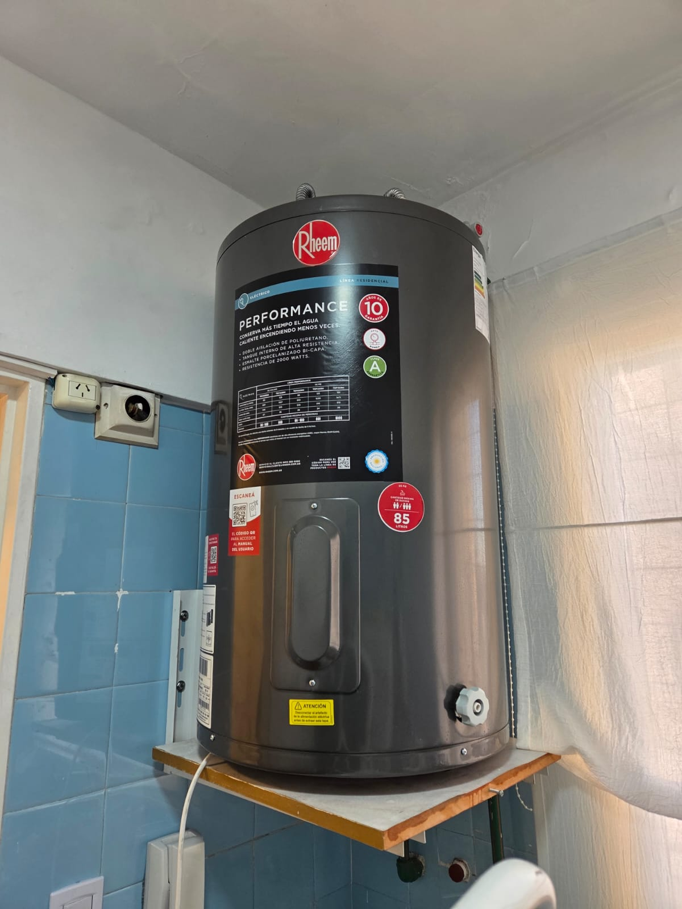
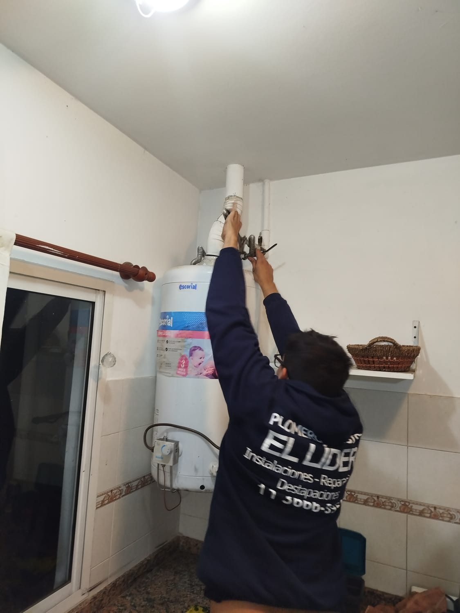
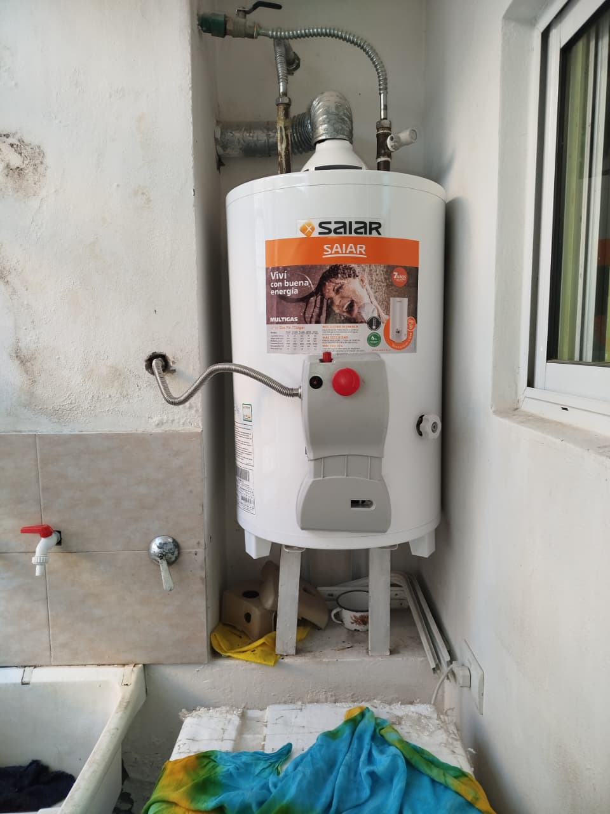
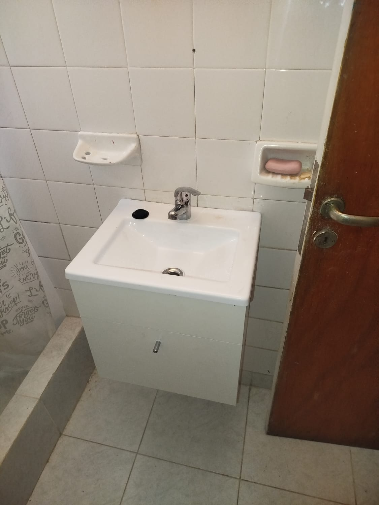
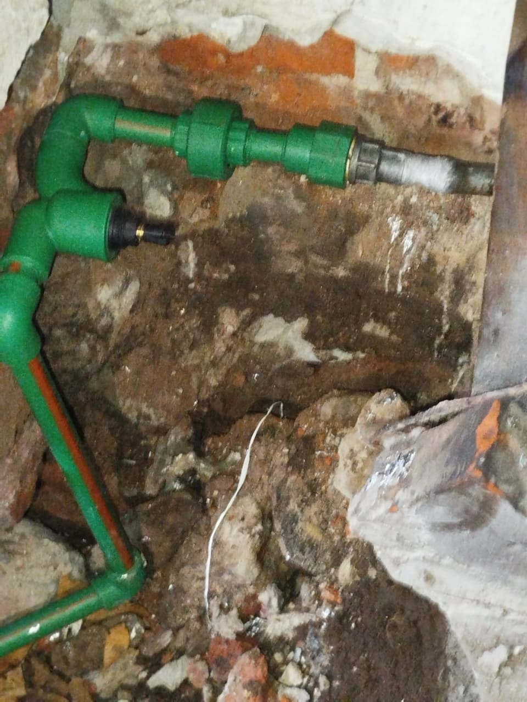
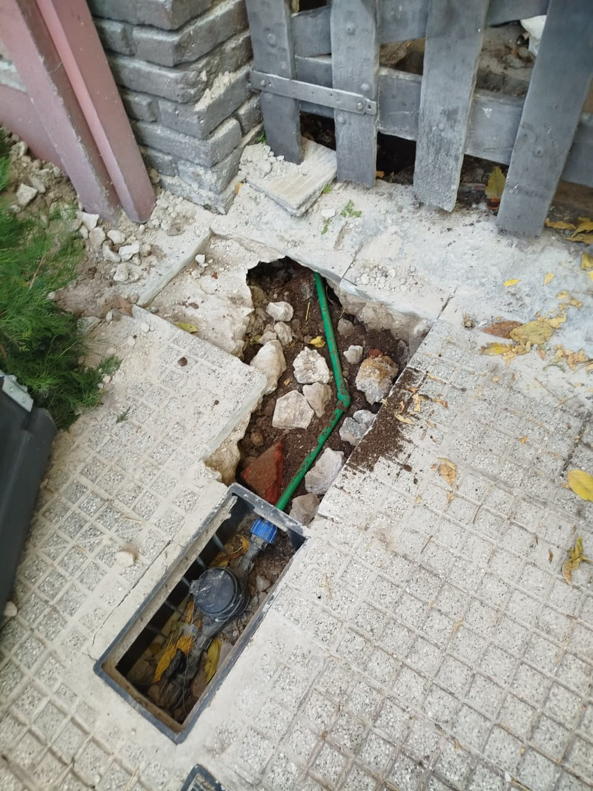

Plomería | Soluciones Definitivas Garantizadas
No hacemos reparos temporales. Cada trabajo de plomería es una solución definitiva. Diagnosticamos el problema, identificamos la causa raíz, y reparamos o reemplazamos lo que sea necesario para que NO vuelva a pasar. Todos los trabajos con garantía.
Reparación de pérdidas y filtraciones
- Diagnóstico profesional de pérdidas visibles y ocultas.
- Identificamos la causa raíz (corrosión, desgaste, defectos).
- Reparación o reemplazo según corresponda — solución definitiva.
- Prueba final y garantía en el trabajo.
Griferías y sanitarios
- Monocomando, duchas, bidet, cocina y lavatorio.
- Mochilas, cisternas, válvulas, pérdidas de inodoro.
- Sifones y desagües de bacha.
- Instalación de cañerías de agua fría y caliente.
Trabajos para consorcios
- Reparaciones en departamentos y espacios comunes.
- Diagnóstico claro y coordinación por WhatsApp.
- Atención a urgencias con respuesta rápida.
- Trabajo prolijo y orientado a solución definitiva.
Gas | Instalaciones Seguras y Garantizadas
Gas es seguridad. Cada trabajo de gas se hace bien o no se hace. Instalaciones profesionales, pruebas rigurosas, y garantía en cada proyecto.
Detección y reparación de pérdidas
- Pruebas profesionales con equipos específicos.
- Identificamos pérdidas visibles y no visibles.
- Corrección segura según norma.
- Prueba final de estanqueidad — garantizado.
Calefones, termotanques y estufas
- Colocación y reparación.
- Revisión de funcionamiento y seguridad.
- Solución de fallas comunes.
Instalaciones y modificaciones
- Modificación de cañerías y recorridos.
- Conexión de cocinas y artefactos.
- Trabajo prolijo y orientado a norma.
¿Por qué somos la mejor opción?
Soluciones Definitivas
No hacemos reparos temporales. Diagnosticamos el problema de raíz, identificamos la causa, y reparamos o reemplazamos lo que sea necesario para que no vuelva a pasar.
Trabajo Garantizado
Cada proyecto que hacemos tiene garantía. Si algo falla por nuestro trabajo, volvemos sin cargo. Eso es confianza.
Respuesta Inmediata
Escribis por WhatsApp y respondemos al toque. Coordinamos rápido según urgencia y disponibilidad. Tu tiempo vale.
Profesionalismo Real
No somos aprendices. Trabajos prolijos, diagnóstico claro, y explicamos qué hacemos y por qué. Sin sorpresas.
Fotos y Video
Presupuesto sin cargo por WhatsApp si mandás fotos o video. Así trabajamos con honestidad desde el primer contacto.
Valoración 5.0 en Google
Clientes reales, trabajos reales, reviews reales. Eso no se compra — se gana trabajando bien.
Trabajos realizados
Ejemplos reales de plomería y gas en CABA y Zona Norte.
Termotanques y calefones



Instalaciones de gas



Plomería e instalaciones de agua

Preguntas frecuentes
Respuestas rápidas sobre plomería y gas en Saavedra, Núñez, Belgrano, Villa Urquiza, Vicente López, Florida, Munro y Olivos.
¿Qué significa "soluciones definitivas"?
Significa que no hacemos reparos temporales. Diagnosticamos el problema de raíz, identificamos por qué pasó, y reparamos o reemplazamos lo necesario para que no vuelva. Si es corrosión, cambiamos la cañería. Si es un flotante gastado, lo reemplazamos. Así trabajamos.
¿Qué garantía tiene el trabajo?
Todos nuestros trabajos tienen garantía. Si algo falla por un error nuestro, volvemos sin cargo. Eso es lo que significa "trabajo garantizado". Confiamos en lo que hacemos.
¿Cuál es el tiempo de respuesta?
Respuesta inmediata por WhatsApp. Coordino rápido según la zona y urgencia del trabajo.
¿Hacés presupuesto sin cargo?
Sí. Presupuesto gratis por WhatsApp con fotos o video. Si necesitás revisión a domicilio antes de contratar, ese desplazamiento se cobra.
¿Cómo sé si tengo una pérdida de gas?
Si sentís olor a gas, ventilá, cerrá la llave general y no enciendas luces ni llamas. Luego contactame por WhatsApp para revisar con pruebas y dejar seguro.
¿Tienen reseñas reales en Google?
Sí. Valoración 5.0 en Google. Son clientes reales con trabajos reales. Eso es lo que pasa cuando trabajas bien y das garantía.
Zonas de trabajo
Cobertura: Saavedra, Núñez, Belgrano, Villa Urquiza, Vicente López, Florida, Munro y Olivos. Respuesta inmediata. Consultá por WhatsApp.
Contacto
Para coordinar rápido, escribime por WhatsApp con tu barrio y una foto o video del problema.
⭐⭐⭐⭐⭐ 5.0 estrellas en Google
Clientes satisfechos con nuestros trabajos. Respuesta inmediata y garantía en cada proyecto.
- WhatsApp: 11 3666 3959
- Teléfono: 11 3666 3959
Tip: Fotos o video = presupuesto gratis por WhatsApp.
Saavedra, Núñez, Belgrano, Villa Urquiza, Vicente López, Florida, Munro y Olivos. Respuesta inmediata.